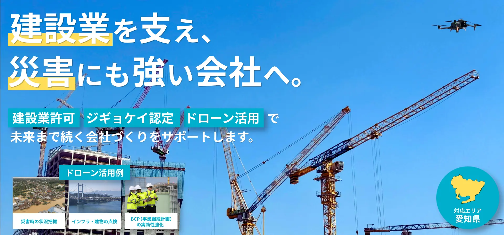
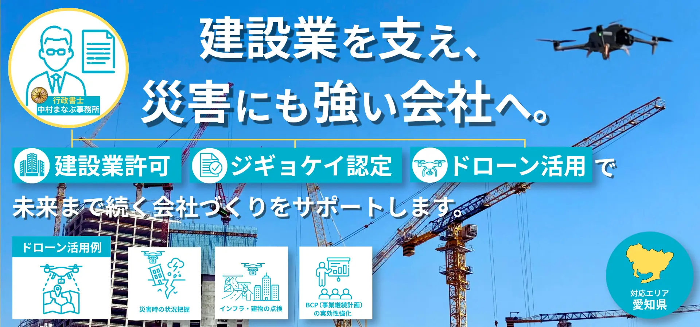

応募作品
愛知県あま市の建設業専門行政書士事務所 様のバナー
大きめバナーと第2案をご覧になれます。

1920x900(表示は横1600) 横長
愛知県あま市の建設業専門行政書士事務所様向けに制作したバナーです。
行政書士事務所のホームページに掲載するトップ画像で、建設業のお客様を対象。
イラストから写真、ビジネスに変更をイメージしたリニューアルのご依頼でした。
情報の重要度に基づく階層を強く意識し、情報が流れるように設計しました。
写真で事業内容を示すことを意識しました。
第2案
レイアウトを変更した第2案です。
-
1920x900(表示は横1600) 横長

第1案を提出後、クライアント様の追加の事業内容をより分かりやすくしたいとのご要望を踏まえ、以下の点を意識して第2案を制作いたしました。
左上に行政書士のアイコンと事務所名を配置し、一目で事務所であることが伝わるようにしました。
右上のドローン写真を活かしつつ、ドローン活用例もアイコンで分かりやすく整理しました。
建設業許可・ジギョケイ認定・ドローン活用の3つにそれぞれアイコンを加え、全体的にアイコンを効果的に使用したレイアウトに変更しました。第1案の写真ベースから、アイコンを活用したデザインに変更しています。